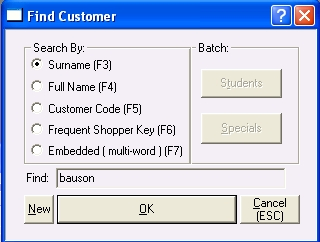

The Find window allows you to quickly locate a record in the master files.

· Click on the relevant radio button to select a search type.
· Then in the Find text box, type in the string you wish to search for.
· Click the OK button.
· If a unique match is found the master will display the details of that record.
· Otherwise the List tab will be displayed with the cursor at the first record matching your search criterion. Scroll down from there to the record you require and then click the Select button (or double click the record in the browser) .
Title master
Embedded Searches
An embedded search will look for matches to your search criterion anywhere within the title.
Customer master
Searching for company names
Use the Full Name or Embedded searches for finding companies.
Embedded Searches
An embedded search will look for matches to your search criterion anywhere within the customer's name, postal address and their major delivery address.
Click on the Back button to return